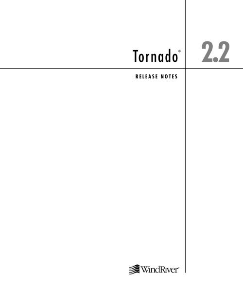
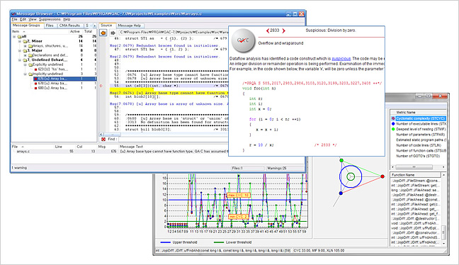
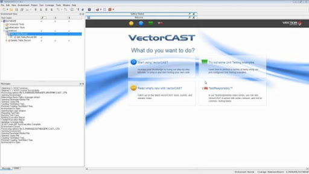
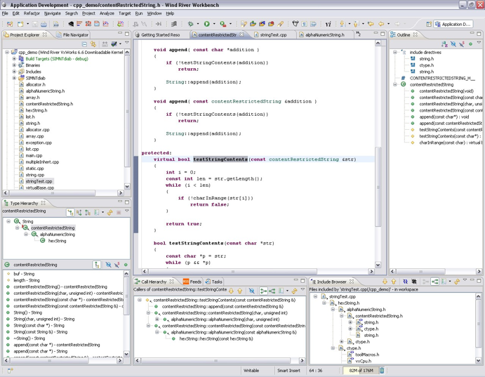

01
수도권 고속철도 TIMS 개발(원격속도제어 장치)
수도권 고속철도 FEPOL 개발
Tornado를 사용한 VxWorks 5.x 버전 환경에서 개발

QAC를 활용한 정적 테스트

- MISRA C 코딩룰을 준수한 개발을 진행하면서 SW 안정성 확보
VectorCAST를 사용한 동적 테스트

- 다양한 테스트 케이스를 만들고 동적 테스트를 진행하면서 요구사항 스펙에 맞는지 검증
02
LTE-R기반 한국형열차제어 시스템 제작 설치
Wind River Workbench 환경에서 VxWorks CERT 버전으로 개발

시리얼 통신 & 내부 메시지 송수신 처리
- IEC 61508 – 안전 무결성 수준(SIL: Safety Integrity Level)의 레벨 4를 만족하기 위한 데이터 처리
- 시스템 메인보드에서 외부 장치들 간의 인터페이스 사양에 만족한 시리얼 통신 구현
- 2중계 절체 시스템에서 VxWorks CERT 버전에 맞는 메인보드간의 내부 시리얼 통신 구현
QAC를 활용한 정적 테스트
- MISRA C 코딩룰을 준수한 개발을 진행하면서 SW 안정성 확보